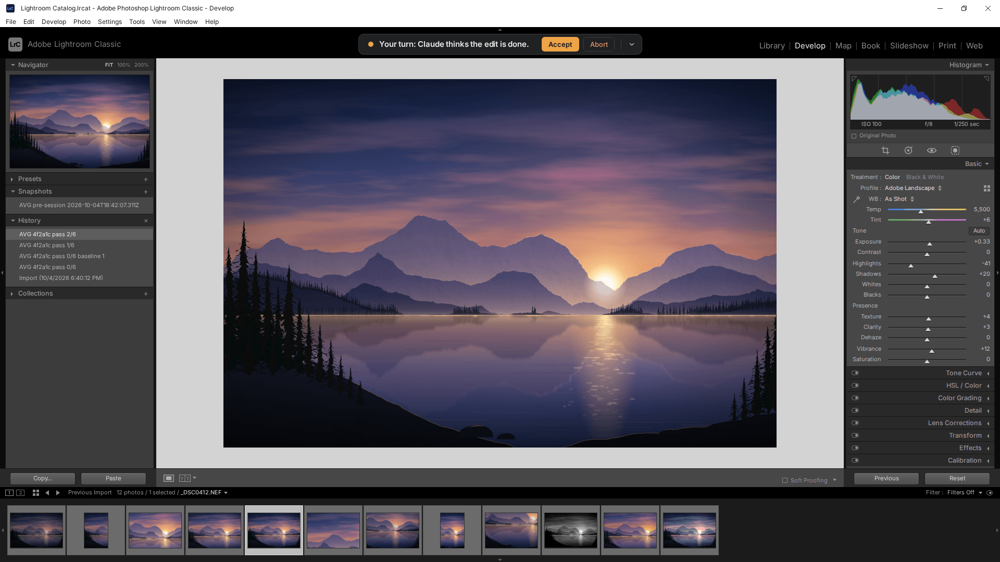
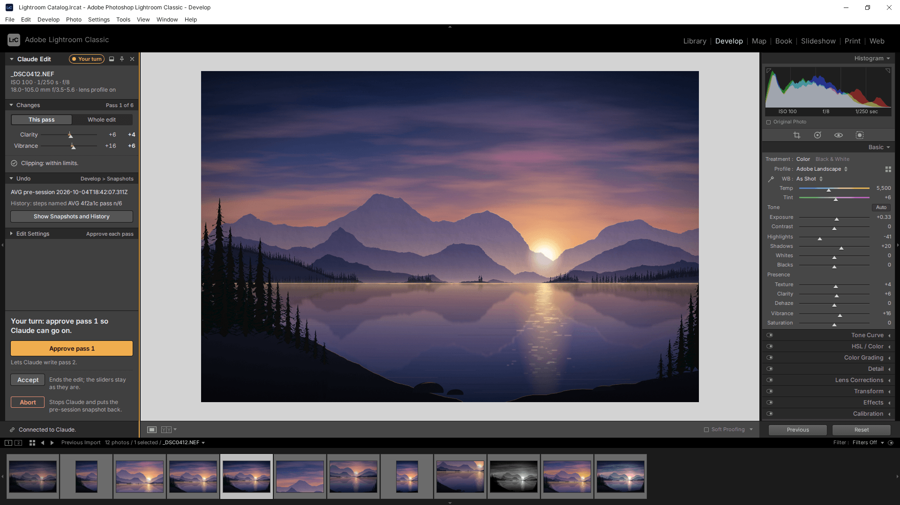
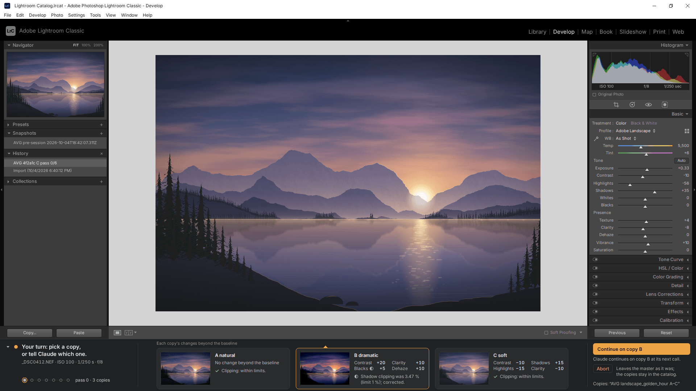

Drawn over a mockup of Lightroom Classic's Develop module at 1920 x 1080, not over Lightroom itself; all geometry is [stage].
Left: the in-context frame at 2/3 size. Right: close-ups cropped from the same frames at 1:1 unless marked. 2026-10-04.

option-a-context.png: Scene C at rest, "Your turn: Claude thinks the edit is done."
Option A
Island
One row in Lightroom's black top band, between the identity plate and the module picker.
Best case
Never in the way. At rest it covers neither the photo nor any panel. On your turn, the sentence and its actions sit in one line at the top of the screen, and the details drop down only on request.
Trade-off
The least visible controls. While Claude works and during a pick, Abort is not in the row: it is one click under the chevron, or Ctrl+Backspace. The 54 x 36 copy chips remind you of the copies but are too small to judge them.
At rest · the island in the top band, 1:1
Details open · Scene P, This pass, 0.75x (option-a-context-open.png)

option-b-context.png: Scene P, full rail (opened by the photographer), "Your turn: approve pass 1 so Claude can go on."
Option B
Rail
A Lightroom-style panel stack over the left panel column, where Navigator, Presets, Snapshots and History sit.
Best case
The richest detail, and the most native. It uses Lightroom's own panel chrome and slider rows, and an Undo panel that names the pre-session snapshot. Abort sits at the same screen position in every state and in both forms.
Trade-off
The full rail covers Snapshots and History, the photographer's own way back. So it docks by default, never expands by itself, and restates the undo path in the rail.
Full rail · top panels, 1:1
Docked (the default) · Scene P, 1:1 (option-b-context-collapsed.png)

option-c-context.png: Scene V, opened by the photographer, copy B chosen. "Your turn: pick a copy, or tell Claude which one."
Option C
Deck
A wide, low bar over the filmstrip band at the bottom: 44 px at rest, 144 px when opened.
Best case
Variants. The three copies sit side by side under the photo at 138 x 92. Each card shows what that copy holds and how its clipping check came out. Picking takes one click plus Enter.
Trade-off
It covers the filmstrip, where the virtual copies live, and hides the filmstrip header's controls. It must show the copies itself. Lightroom's filmstrip height is assumed, not measured [unverified].
Opened · Scene V: the turn column and the action column, 1:1
Opened · cards A and B (B chosen); card C is in the frame on the left, 1:1
At rest · Scene W, the 44 px bar, ends shown 1:1 (option-c-context-working.png)